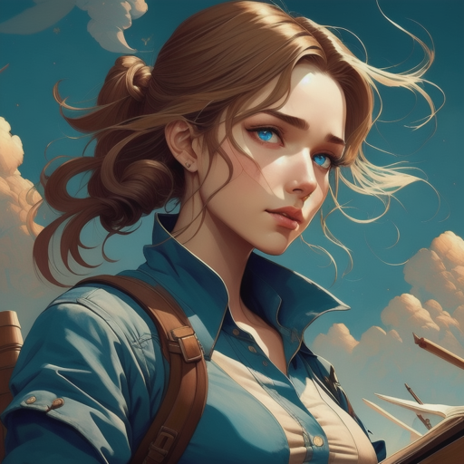

Sara, Jack, and Sophie decided to confront the rival faction within the secret organization head-on.
They couldn't allow those with ill intentions to control the artifacts' power.
The ensuing battle was fierce and tested their resolve. It became a showdown between those who sought to use the artifacts for selfish gains and those who believed in protecting the world from their potential harm.
Sophie, with her resourcefulness, played a pivotal role in helping them gain an advantage. She uncovered vital information that exposed the rival faction's weaknesses.
As the conflict raged on, Sara, Jack, and Sophie had to make critical decisions that would determine the outcome of the battle and the fate of the artifacts.
The world held its breath as the final confrontation approached
The Reconnection
Contunue with the battle againts the rival faction.